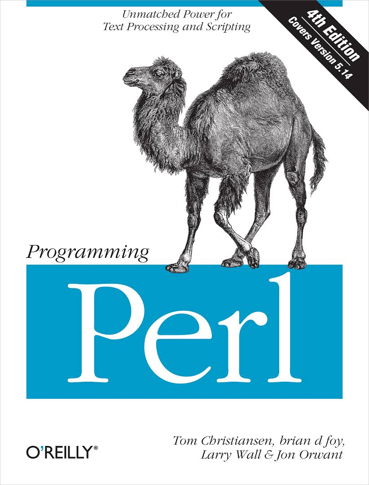

Programming is Hard, Let's Go Scripting...
"Real programmers can write assembly code in any language."

Larry Wall

Larry Wall, programmer, linguist, author, born March 10, 1949 in Duncan, British Columbia, Canada. Created 1987 the computer language Perl. Wall is the developer of the Perl programming language. Wall is also known as the original author of the rn Usenet software, and the nearly universally used patch. He has won the IOCCC twice, and was the recipient of the first Free Software Foundations award for the Advancement of Free Software in 1998.